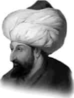

FATİH SULTAN MEHMET
Annesi : Hüma Hatun
Doğumu : 29 Mart 1432
Vefatı : 3 Mayıs 1481
Saltanatı : 1451 - 1481 (30 yıl)
Fatih Sultan Mehmet, uzun boylu, dolgun yanaklı, kır-mızı-beyaz tenli, kırık burunlu, kolları adaleli ve kuvvetli bir padişahtı. Devrinin en büyük ulemasından birisi idi. Yedi tane yabancı dil bilirdi.
Âlim, şair ve sanatkârları toplar ve onlarla sohbetten çok hoşlanırdı. Gayet soğukkanlı ve cesurdu. Eşsiz bir kumandan ve idareci idi. Yapacağı işler hususunda, en yakınlarına bile hiçbir şey sızdırmazdı. Fatih Sultan Mehmet’in ömrü seferlerle geçti. Yıkılmaz diye bilinen Bizans’ı yıktı. İstanbul’u fethetti. Ayasofya Kilisesi’ni camiye çevirdi. Kıyamete kadar câmi olarak kalmasını istediği bu muhteşem mâbed için mükemmel bir vakfiye yazdırttı.
1127 yıl kilise, 481 yıl de câmi olarak kullanılan Ayasofya, 1934’de müze haline getirildi. Fatih, Enez’i, Galata ve Kefe’yi Osmanlı topraklarına dahil etti. Limni, İmroz, Şemendirek, Taşoz, Bozcaada ve Boğdan’ı aldı. Belgrad’ı kuşattığı zaman çarpışmaya bizzat katıldı. Alnından ve dizinden ciddi şekilde yaralandı. 1458’de Mora’yı kısmen, bir yıl sonra da Sırbistan’ı tamamen aldı. 1461’de Amasra’yı ve İsfendiyar Oğulları Beyliğini Osmanlı topraklarına dahil etti. Trabzon Rum İmpara-torluğu’nu ortadan kaldırdı. 1462’de Romariya, Yayçeve Midilli’yi aldı. 1463 yılında Papa’nın büyük gayretleri ile toplanan ve savaşa katılan herkesin altı aylık günahının affolunacağı ilân edilen yirmi devletin katıldığı bir Haçlı İttifakı ile on altı yıl savaştı. 1463’de Bosna’yı fethetti ve Hersek’i de tabiiyeti altına aldı. 1466’da Konya ve Karaman’ı aldı. Arnavutluk’u tamamen Osmanlı topraklarına kattı. 1470’de Ağrıboz’u aldı. Uzun Hasan’ı Otlukbeli savaşında kesinlikle yendi. Zafer şükranesi olarak kırk bin esiri salıvererek, hürriyetlerine kavuşturdu. 1476’da Boğdan’ı Osmanlı topraklarına kattı. Otuz yıl içinde tam yirmi beş seferi bizzat kendisi idare etti. 900. 000 bin km2 olan topraklarını 2. 214. 000 km2 ye çıkardı. Fatih Sultan Mehmet, Venedikliler tarafından tertiplenen tam on dört suikasttan kurtuldu. Son suikasttan ise kurtulamadı. Venedikliler, bu büyük hükümdarı, aslen bir Yahudi olan Maesto Jakopo isimli bir doktor vasıtasıyla zehirleterek öldürmeye muvaffak oldular. Tarihçi Babinger’e göre bu suikastçı doktor, Yakup Paşa unvanı ile sarayın doktorları arasında bulunuyordu.
1481 Mayısı’nın III. günü yine bir sefere çıkmışken, Gebze’de ordugâhında perşembe günü vefat etti. Papa, Büyük Hakan’ın ölümünde tam üç gün üç gece bütün kiliselerin çanlarını çaldırtarak sevinç ayinleri yaptırdı. Fatih, kırk dokuz yıl bir ay beş gün yaşadı. İki imparatorluk, dört krallık ve on bir prenslik yıkan büyük hükümdarın cenaze namazı Fatih Camii’nde Şeyh Müslihiddin Mustafa Vefa Efendi kıldırdı. Türbesi Fatih Camii yanındadır.
Fatih, Müslüman Türk Milletine yapmış olduğu büyük hizmetlerle, dünyanın en büyük hükümdarlarından birisi olduğunu ispat etmiştir. İstanbul gibi, cihanın incisi olan, bu muhteşem şehri Türk milletine kazandırmıştır. Yapmış olduğu çalışmalar ile memleketinde büyük çapta bir imar hareketini gerçekleştirmiştir. Bugünün üniversitesi olan Fatih Külliyesi’ni 1470 yılında tamamlamış, İstanbul’u fethettiği zaman sekiz tane kiliseyi camiye çevirmiş, etrafındaki papaz odalarını da medrese yapmıştır. Ayrıca birçok Anadolu kasabasında da medreseler yaptırmıştır.
Erkek çocukları: Mustafa, II. Beyazıt, Cem, Korkut.
Kızı çocukları: Gevherhan.